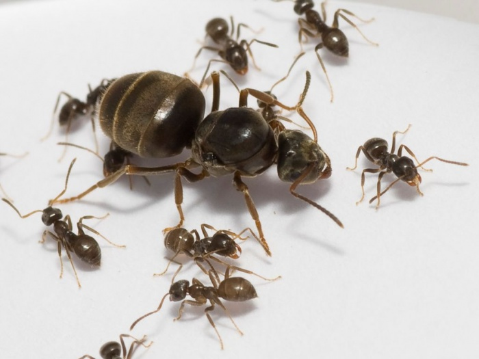

Queen

Workers
Drones
Although ants are frustrating when they get into your home or when you’re having a picnic, ants do help the environment. They are social insects, which means they live in large colonies or groups. Depending on the species, ant colonies can consist of millions of ants.
There are three kinds of ants in a colony: The queen, the female workers, and males. The queen and the males have wings, while the workers don’t have wings. The queen is the only ant that can lay eggs. The male ant’s job is to mate with future queen ants and they do not live very long afterwards. Once the queen grows to adulthood, she spends the rest of her life laying eggs! Depending on the species, a colony may have one queen or many queens.
Ant colonies also have soldier ants that protect the queen, defend the colony, gather or kill food, and attack enemy colonies in search for food and nesting space. If they defeat another ant colony, they take away eggs of the defeated ant colony. When the eggs hatch, the new ants become the "slave" ants for the colony. Some jobs of the colony include taking care of the eggs and babies, gathering food for the colony and building the anthills or mounds.